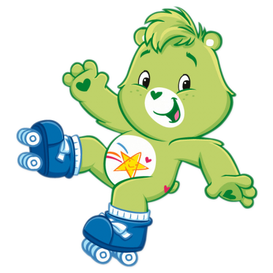
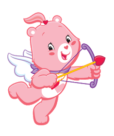
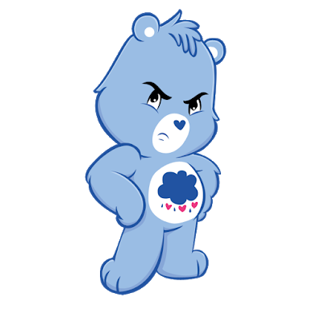
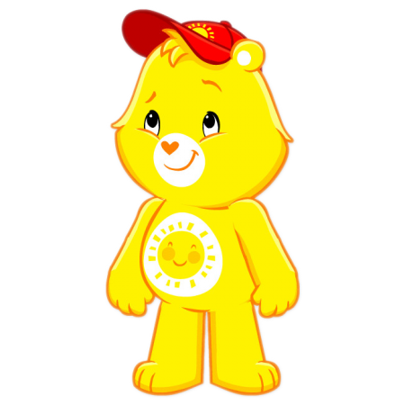
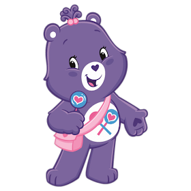

Suerteosito
Se caracteriza por su pelaje verde vibrante y su símbolo de un trébol de cuatro hojas, representando la suerte y la fortuna.

Alegrosita
Es la osita más alegre y divertida del grupo, siempre tiene una sonrisa en su rostro y contagia su alegría a todos los que la rodean , su símbolo es una estrella brillante que representa la alegría y la esperanza.

Gruñonsito
Es un poco tímido y gruñón al principio, pero una vez que lo conoces, te das cuenta de que es un osito muy dulce y su símbolo es una nube gris que representa la tristeza y la superación.

Divertosito
Es el osito más travieso y juguetón del grupo, le encanta hacer bromas y divertirse con sus amigos y su símbolo es un rayo que representa la diversión y la energía.
